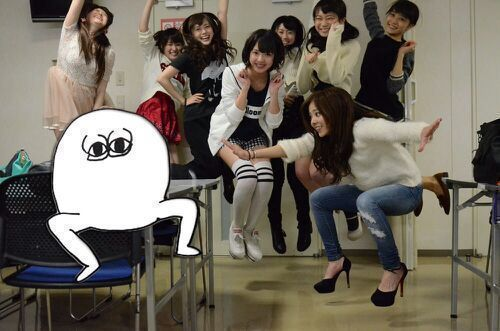
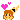

| 2014/03 27 Thu | ZIP!春フェスありがとう。ろって ぃ− |
こんばんわ..*
今日も1日お疲れ様です ... Rottyです

jump ! jump ! ! jump wwww ! ! ! ! !

ハァハァハァ、、、 ナイスショット.♪
私 一人だけ何か違う .*
ドイヤさんも一緒に跳ばしてみました 笑
左から さゆりん、かずみ、まいやん、まあや、ひなちま、まなつ、まいまいです.
昨日は 〜ZIP!春フェス〜がありました ((
 ) ) )
) ) )
本当に楽しかったです！
実はこの選抜メンバーでライブをするのが今回が初でありました。セットリストは
ロマンスのスタート
走れ bicycle
ガールズルール
気づいたら片想い
君の名は希望
制服のマネキン
おいでシャンプー でした !!!
来てくださった乃木坂ファンの皆様ありがとうございました.
そして「 三代目 J Soul Brothersさん」「ねごとさん」「赤い公園さん」のファンの皆様ありがとうございました. 初めて乃木坂46のライブを見る方がほとんどだったと思います. でも乃木坂以外のウチワを持っている女性の方々が 私に手を振ってくださったり本当に嬉しかったです..* ありがとうございました.♪
ライブ後、めっちゃいい汗かいた直後
ライブ後のこのキモチいい感じ伝わってるかな？
もう１枚
汗で髪がいい感じに ゆるゆるになりました...*
ライブ直後 いっぱい写メ撮ったからまた載せまーす !!
ありがとうございました.
明日は PONフェスです !!!
楽しみ過ぎる、、、待ってます 
のし, Rotty
コメント(130)
2014/03/27 23:06